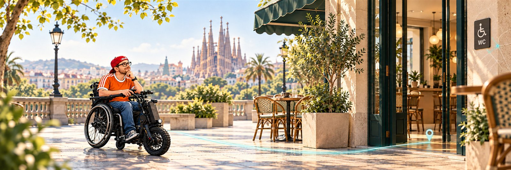

Troba WC accessibles i coneix les barreres abans d’anar-hi.
Les propostes es revisen abans de publicar-se.
Cal activar JavaScript per veure les fitxes i canviar d’idioma. / Activa JavaScript para ver las fichas y cambiar de idioma. / Enable JavaScript to view the listings and change language.